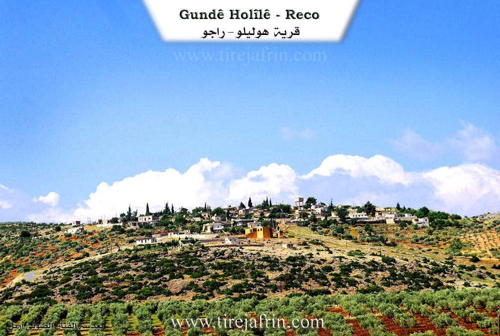
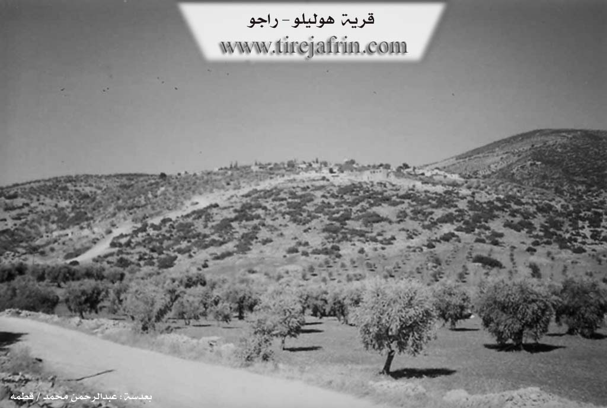

General Information
Nahiya (Subdistrict)
Reco
Also Known As
Hlîl, Holîlê, هليل, هوليلو
Families, Clans, etc.
Holîlo, Holîlî, Kîlê, Xeşman
Photos


Basic Information about Holîlê
Source: Tirej Afrin
Etymology: Named after 'Holîl', the nickname of the first owner of the village. There is a connection to the Holîlan, a Kurdish tribe found in Kirmaşan linked to the Lûr-Feylî Kurds.
Foundation Date/Period: 300 years ago
Hills: Çiyayê Bilêl
Shrines: Mezelê Şêx Mihemed Elî
Summaries
I. Summary from TirejAfrin Site (English) of Holîlê
Source: https://www.tirejafrin.com/site/kura%20afrin%20%20%20Reco%20-%20holelo.htm
The following is stated in the book Çiyayê Kurmênc (Efrîn): A Geographical Study: Gundê Holl, Holîlo, Helel / 792 inhabitants - 81 hectares - 5 km - 720 m /:
Etymology and Origins
Holîl: A title by which the first owner of the village was known. There is still a large family in the village known by the name "Holîlî" (Holl). Holîlan is the name of a Kurdish tribe found in Kirmaşan (Lirx, p. 75), and it is linked to the Kurdish Lûr-Feylî tribes. This small village stands on the western slope of the Çiyayê Bilêl mountain.
Location and Geography
The book Efrîn... Her River and Her Green Hills states: Holîlo is a village in Çiyayê Kurmênc affiliated with the Reco sub-district, Efrîn region, Heleb governorate. It is a small village situated on a rocky flat on the southern slope of a limestone and flint mountain, with oak trees scattered across its slopes. It overlooks agricultural lands to the south, furrowed by streams descending southward. It is located 3 km northeast of the town of Reco. Its soil is clay-based and poor.
Boundaries
It is bordered to the north by a mountain range and the village of Hecmanlî; to the south by a slope, a valley, olive trees, vineyards, and the villages of Kûranlî and Hec Xelîl; to the east by a harsh slope, a deep stream, a high mountain range, and the village of Çerxetlî; and to the west by a slope, a deep valley, a high mountain range, and the town of Reco.
Infrastructure and Services
The number of houses reaches about 25, and the village is approximately 300 years old. Its old dwellings are made of stone and mud with wooden ceilings, while modern cement buildings have spread to the north. A modern electricity grid is available. The village drinks from cisterns dug in front of the houses, which collect rainwater in winter. It has a telephone and a modern primary school. The village belongs to the municipality of Hec Xelîl. The village is connected to the sub-district by a levelled, unpaved dirt road.
Agriculture and Economy
Residents work in rain-fed agriculture on an area of 81 hectares (olives, grains, legumes, vines) alongside raising sheep and goats.
Religious Sites and Society
The shrine of Mezelê Şêx Mihemed Elî is located in the village. Among the families present in the village are: the Xeşman family, the Holîlo family, and the Kîlê family. The village mukhtar is Mihemed Yûsif kurê Ekaş. The village is known for its residents being revolutionaries against the French occupation, most notably the late Hisên Simo.
Village Mukhtar: Mihemed Yûsif
Sources of Information:
- Book: جبل الكرد (عفرين) دراسة جغرافية Çiyayê Kurmênc (Efrîn): A Geographical Study by د. محمد عبدو علي Dr. Mihemed Ebdo Elî.
- Book: عفرين .... نهرها وروابيها الخضراء Efrîn... Her River and Her Green Hills by عبدالرحمن محمد Ebdulrehman Mihemed from the village of Qetme.
- Studies of Navenda Tirej Soft / Ebdulrehman Hacî Osman.
- Some residents of the villages.
Preparation and Execution: Director of the Tirej Efrîn website: Ebdulrehman Hacî Osman 20/12/2013
II. Summary of Holîlê from Afrin 366
Source: https://www.youtube.com/watch?v=C-U3dZDpFrY
The second part of the documentary is filmed in the village of Holîlê, which the host calls Olîle. The village is situated in a high, mountainous area with views of significant regional landmarks. The host identifies the location relative to Çiyayê Bilêl, a high mountain, and notes that the village of Çeqmaq lies opposite them.
According to an elderly resident, the history of Holîlê stretches back approximately 350 years. The community traces its origins to Wêranşar and identifies with the Millî tribal confederation, specifically the Brûkî tribe. The elder recounts that their ancestors, including figures like Qeysim and Şahîn, migrated to the area when boundaries were different. He mentions a specific historical site or ruin known as Xirabê Qeysim linked to these ancestors. The village has a history of conflict and survival, with the elder mentioning past disputes involving Huseynê Simo and the defense of their homes against enemies who broke down doors.
The social structure of Holîlê has undergone a dramatic transformation. In the past, the village was home to sixty or seventy households. However, migration to cities has left the village nearly empty, with only about three or four families remaining. The transcript identifies several specific families or households, including Mala Memû, whose house is located on a slope known as Banê mala Memû, as well as Mala Hemşîlê and Mala Xişmî. The host also visits a property identified as Malê Bavê Gêndî.
Notable features within the village include a mosque and a water reservoir called Xezênê avê. The village is also home to historical caves (Şikeft), one of which the residents claim is around 300 years old and was formerly used for housing livestock. The area contains ruins known as Dorbalîte, described by the elder as a desolate place. Despite the depopulation and the presence of ruined or "broken" houses, the remaining elders emphasize their deep attachment to the land and their Kurmanc identity, rejecting any confusion with other ethnic groups.
Transcript: Ĥec_Xelîl_Holîlê_Afrin 366_1. Holîlê is covered from 10:24 to 27:09.
Transcriptions and Subtitles
| Source | Video | Subtitles | Transcript |
|---|---|---|---|
| Afrin 366 1 | Watch Video | Download SRT | View Transcript |
Foundation/Origin Information of Holîlê
The current inhabitants from the Birûkî tribe migrated from Diyarbakir, by way of Weranşar. Upon their arrival, they purchased the land from its original inhabitants, the Holî tribe, who were Yazidis.
Source: Afrin 366 Transcript
Possible Village Name Meaning of Holîlê
Holîl is a title known by the first owner of the village. A large family in the village is named Holîlî. Holîlan is the name of a Kurdish tribe found in Kermanshah, connected to the Kurdish Lor-Fili tribes.
Source: TirejAfrin Site
The village is named for its original inhabitants, the Holî tribe.
Source: Afrin 366 Transcript
V. Links
- Tirej Afrin:
https://www.tirejafrin.com/site/kura%20afrin%20%20%20Reco%20-%20holelo.htm - Video:
https://www.youtube.com/watch?v=I25t4t2pm-M (no longer available)